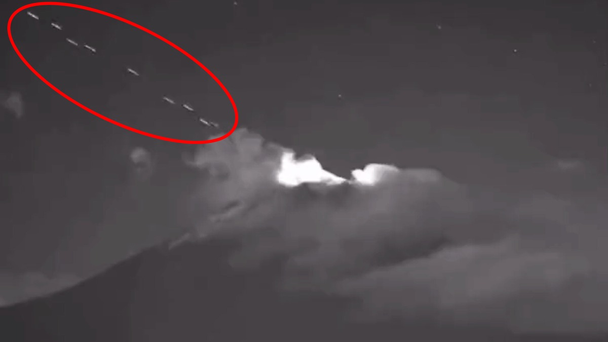
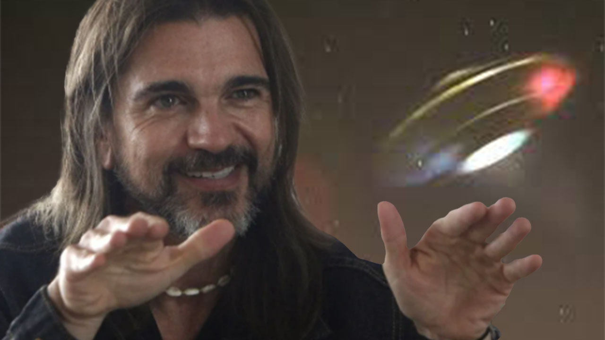
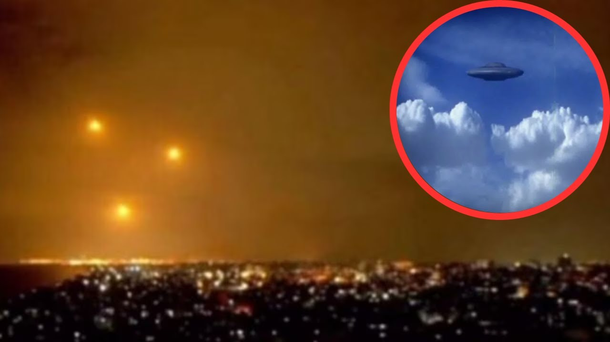

Expediente Secreto es un programa de investigación que presenta una temática enfocada al fenómeno ovni y la evidencia extraterrestre en la historia de la humanidad y el planeta tierra. Desarrollando temas que presentan enigmas, grandes misterios de la humanidad, mitos, leyendas, evidencia extraterrestre en la antigüedad y en la actualidad con una perspectiva consciente, Expediente Secreto busca despertar en los oyentes un interés por la investigación y por resolver dudas a muchas preguntas que en algún momento de nuestras vidas nos hemos hecho.

Por Diario MARCA
26/08/2023 - 14:22 GMT -5
El pasado jueves 24 de agosto comenzó a circular un video en donde se pueden ver algunos objestos voladores dentro del volcán Popocatépetl, la cual fue captada por las cámaras que vigilan la actividad del cráter.
En las imágenes se observa con suma claridad el instante en que se ve a una flotilla conformada por al menos 18 objetos que emitían extrañas luces intermitentes salir eyectadas del cráter de Don Goyo la noche de ayer. El misterioso fenómeno fue captado por una de las cámaras de vigilancia del volcán instalada en Tianguismanalco y que concluyó alrededor de las 20:35 horas.
Por Redacción CLARÍN
02/11/2023 06:15/ Actualizado al 02/11/2023 11:25
El cantante colombiano Juanes Esteban Aristizábal Vásquez, más conocido como Juanes, narró en un programa de televisión una experiencia OVNI que vivió cuando estaba de viaje en Suiza.
En conversación con “Buen día”, el artista dijo que tuvo una revelación extraterrestre (E.T.) una noche en la que él y sus amigos salieron a beber. Se encontraban en Ginebra y, vale aclarar, estaban con jet lag.
La cuestión es que terminaron en un campo en el que de pronto aparecieron -según Juanes- “cinco luces gigantes”. Él y sus amigos pensaron que era un aeropuerto, pero rápidamente se dieron cuenta de que eso no podía ser posible.
“Después se empezaron a mover de forma perfecta, desaparecían unas y aparecían otras (luces), como unos patrones que se ven en Internet”, relató el colombiano.
Así como Juanes, otros cantantes que también creen que los seres humanos no somos los únicos en el universo revelaron que vivieron experiencias similares. Repasemos algunos.
Robbie Williams
En una nota de 2008 con Joss Stone, Williams reveló que hasta ese entonces había tenido tres acercamientos con OVNIS.
Uno de ellos fue mientras componía su tema "Arizona". Dijo que se le apareció “una gran bola de luz dorada” cuando estaba tocando esa canción que justo habla de tener contacto con extraterrestres.
Elvis Presley
El Rey del rock fue una de las primeras superestrellas del canto en asegurar que tuvo experiencias con OVNIS.
Presley dijo que cuando él nació, su familia y su médico vieron una extraña luz brillando sobre su casa...
Patricia Sosa
La cantante argentina relató varias veces sus experiencias con OVNIS. En una edición de 2018 del ciclo televisivo "PH, Podemos hablar", Sosa contó una y fue noticia nacional.
"Vi unas 20 o 30 naves que se pusieron en el precipicio y prendieron las luces como si te dijera 15 autos prenden los focos", contó. La primera vez que experimentó una vivencia OVNI fue en el cerro Uritorco, en Córdoba, cuando rondaba los 30 años.
Demi Lovato
La estadounidense afirmó varias veces haber visto OVNIS. Su anécdota más conocida es la de Joshua Tree. Y dice así.
"Fue una experiencia loca que me ocurrió en Joshua Tree (California). Era una luz brillante que se movía de formas extrañas, en las que un avión no lo haría. Mi objetivo es averiguar lo que realmente sucedió", narró Lovato. Y finalmente reflexionó: "¿Y si los extraterrestres no están viajando años luz para visitarnos? ¿Y si ya están aquí esperando a que les tendamos la mano?".
Miley Cyrus
En diálogo con Interview, Cyrus dijo que fue perseguida por “una especie de OVNI” mientras iba manejando por San Bernardino junto a un amiga. Dijo que el objeto parecía un “rompenieves volador”. El evento la alteró durante casi una semana.
Post Malone
El rapero vio por primera vez un OVNI cuando tenía 16. Lo dijo en una nota con Joe Rogan. "Estaba viendo por la ventana con mi primo y apareció una luz que simplemente se quedó ahí parada y de repente se fue al carajo... O sea, no se puede explicar", contó. El cantante se encontraba en Nueva York.
Nick Jonas
El ex Jonas Brother’s confesó haber visto uno a los 14 mientras jugaba básquet. Eran “tres platillos voladores” como los de las películas, reveló el vocalista a Seth Meyers. "Quedé convencido de que eran reales y busqué en internet y hubo tres avistamientos idénticos en otros estados. Por eso soy un firme creyente en los alienígenas", completó.
Por Luis Velandia
08/10/2023 - 21:41 h COT
El cantante colombiano Juanes Esteban Aristizábal Vásquez, más conocido como Juanes, narró en un programa de televisión una experiencia OVNI que vivió cuando estaba de viaje en Suiza.
En conversación con “Buen día”, el artista dijo que tuvo una revelación extraterrestre (E.T.) una noche en la que él y sus amigos salieron a beber. Se encontraban en Ginebra y, vale aclarar, estaban con jet lag.
La cuestión es que terminaron en un campo en el que de pronto aparecieron -según Juanes- “cinco luces gigantes”. Él y sus amigos pensaron que era un aeropuerto, pero rápidamente se dieron cuenta de que eso no podía ser posible.
“Después se empezaron a mover de forma perfecta, desaparecían unas y aparecían otras (luces), como unos patrones que se ven en Internet”, relató el colombiano.
Así como Juanes, otros cantantes que también creen que los seres humanos no somos los únicos en el universo revelaron que vivieron experiencias similares. Repasemos algunos.
Robbie Williams
En una nota de 2008 con Joss Stone, Williams reveló que hasta ese entonces había tenido tres acercamientos con OVNIS.
Uno de ellos fue mientras componía su tema "Arizona". Dijo que se le apareció “una gran bola de luz dorada” cuando estaba tocando esa canción que justo habla de tener contacto con extraterrestres.
Elvis Presley
El Rey del rock fue una de las primeras superestrellas del canto en asegurar que tuvo experiencias con OVNIS.
Presley dijo que cuando él nació, su familia y su médico vieron una extraña luz brillando sobre su casa...
Patricia Sosa
La cantante argentina relató varias veces sus experiencias con OVNIS. En una edición de 2018 del ciclo televisivo "PH, Podemos hablar", Sosa contó una y fue noticia nacional.
"Vi unas 20 o 30 naves que se pusieron en el precipicio y prendieron las luces como si te dijera 15 autos prenden los focos", contó. La primera vez que experimentó una vivencia OVNI fue en el cerro Uritorco, en Córdoba, cuando rondaba los 30 años.
Demi Lovato
La estadounidense afirmó varias veces haber visto OVNIS. Su anécdota más conocida es la de Joshua Tree. Y dice así.
"Fue una experiencia loca que me ocurrió en Joshua Tree (California). Era una luz brillante que se movía de formas extrañas, en las que un avión no lo haría. Mi objetivo es averiguar lo que realmente sucedió", narró Lovato. Y finalmente reflexionó: "¿Y si los extraterrestres no están viajando años luz para visitarnos? ¿Y si ya están aquí esperando a que les tendamos la mano?".
Miley Cyrus
En diálogo con Interview, Cyrus dijo que fue perseguida por “una especie de OVNI” mientras iba manejando por San Bernardino junto a un amiga. Dijo que el objeto parecía un “rompenieves volador”. El evento la alteró durante casi una semana.
Post Malone
El rapero vio por primera vez un OVNI cuando tenía 16. Lo dijo en una nota con Joe Rogan. "Estaba viendo por la ventana con mi primo y apareció una luz que simplemente se quedó ahí parada y de repente se fue al carajo... O sea, no se puede explicar", contó. El cantante se encontraba en Nueva York.
Nick Jonas
El ex Jonas Brother’s confesó haber visto uno a los 14 mientras jugaba básquet. Eran “tres platillos voladores” como los de las películas, reveló el vocalista a Seth Meyers. "Quedé convencido de que eran reales y busqué en internet y hubo tres avistamientos idénticos en otros estados. Por eso soy un firme creyente en los alienígenas", completó.